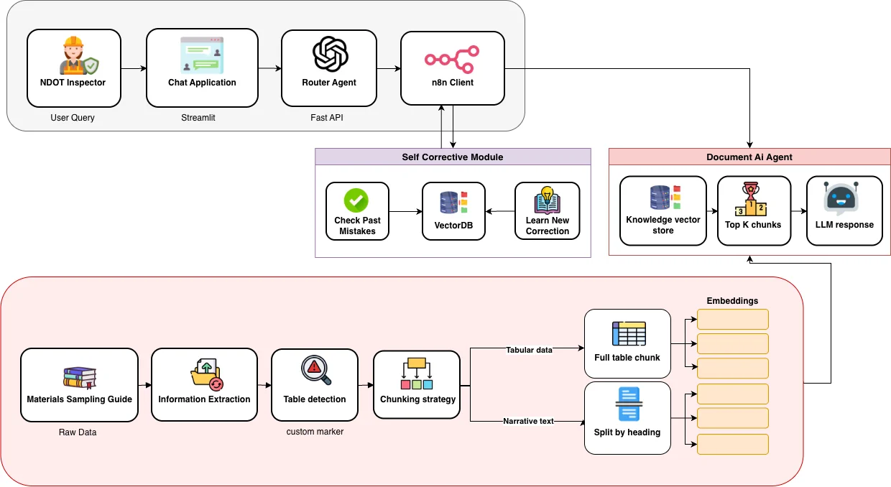
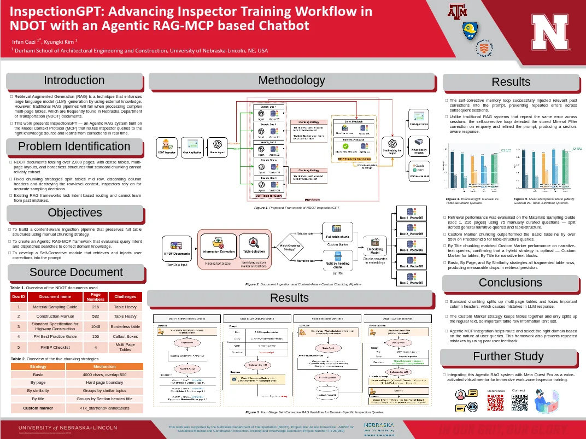

InspectionGPT: Advancing Inspector Training Workflow in NDOT with an Agentic RAG-MCP Based Chatbot
Irfan Gazi, Kyungki Kim
CI & CRC Joint Conference, San Antonio, TX · 2026
Abstract
Retrieval-augmented generation (RAG) grounds a large language model in external documents, but standard RAG pipelines break down on the dense, multi-page and borderless tables common in Nebraska Department of Transportation (NDOT) manuals. Across five NDOT documents totalling over 2,000 pages, fixed chunking splits tables mid-row and discards the column headers that inspectors rely on for sampling decisions, and existing RAG frameworks neither route queries by intent nor learn from past mistakes. This work presents InspectionGPT, an agentic RAG system built on the Model Context Protocol (MCP). A content-aware ingestion pipeline keeps full table structures intact with custom chunk markers. A router agent evaluates query intent and dispatches each search to the right domain knowledge. A self-corrective module stores user corrections and injects relevant ones into the prompt on later queries. On the 216-page Materials Sampling Guide, evaluated with 75 manually curated questions, Custom Marker chunking outperformed the basic baseline by over 55% on Precision@5 for table-structure queries, while By Title chunking matched it on narrative text, pointing to a hybrid strategy. On re-query, the self-corrective loop detected a stored correction and produced a section-aware answer instead of repeating the error.
Framework
A Streamlit chat app sends the inspector’s query to a FastAPI router agent. An n8n client coordinates the self-corrective module, which checks past mistakes, and the document agent, which retrieves the top chunks and writes the answer. Source documents are extracted, table-detected, chunked and embedded first.

Poster


BibTeX
@inproceedings{gazi2026inspectiongpt,
title = {InspectionGPT: Advancing Inspector Training Workflow in NDOT
with an Agentic RAG-MCP Based Chatbot},
author = {Gazi, Irfan and Kim, Kyungki},
booktitle = {CI \& CRC Joint Conference},
address = {San Antonio, TX},
year = {2026},
note = {Poster}
}